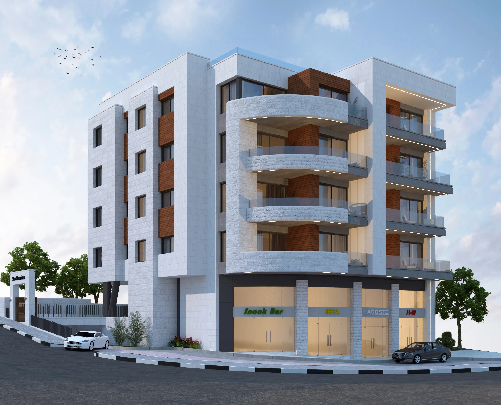

Iyyad Jaradatاياد جردات
Ramallah, Palestine
The Iyyad Jaradat building in Ramallah stacks three floors of apartments over a glazed commercial ground floor, keeping the structural transfer level between them visible rather than hidden, with deep residential balconies that double as sun-shading for the units below.
Commerical - Residential